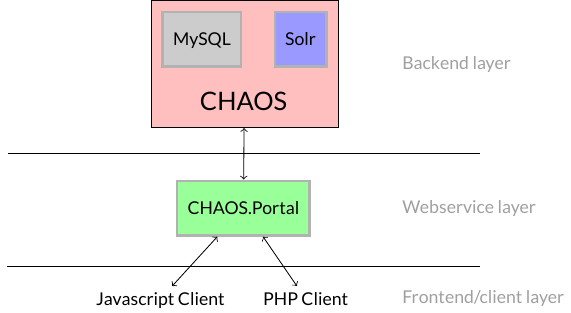
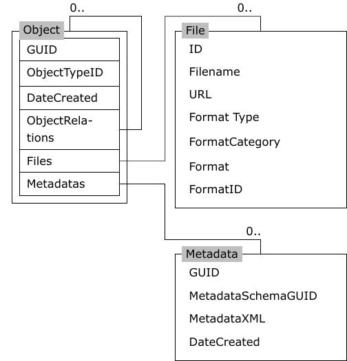

CHAOS is a database for media content.
CHAOS does not store the media itself but rather references (URLs) to the media
and metadata (XML) about it.
CHAOS is usually accessed through its webinterface CHAOS.Portal. There exists PHP and Javascript libraries that wrap the CHAOS.Portal API into simple function calls on Javascript or PHP objects.

The current version of CHAOS (as of March 2013) is v5.
Tutorials (including this introduction) can be assumed to be written
for v5 unless otherwise noted.
CHAOS v5 was released in November 2012. The primary change from v4
to v5 is that output is now guaranteed to be UTF-8.
v6 is currently in development.
Each media reference in CHAOS is called an Object. Objects
have a number of fields (also called properties). The two most
important properties are Files and Metadatas.
Files is a list of files (media URLs) associated
with the objectMetadatas is a list of metadata (XML strings)
associated with the objectAn overview can be seen in the figure below.

| Property name | Description |
|---|---|
| GUID | Every object has a unique id (a GUID) |
| ObjectTypeID | A type of the object |
| Metadatas | A list of metadata objects (Metadata) |
| Files | A list of file objects (FileInfo) |
| ObjectRelations | A list of objects related to this object |
A file has several different format specifiers. In order of most general to most specific they are:
FormatTypeFormatCategoryFormat and FormatID| Property name | Description |
|---|---|
| URL | Location of the file. In general the most important property
of the File |
| FormatType | Image, Video, Sound, Document |
| FormatCategory | Image Thumbnail, Image Original, Movie, Sound, Document |
| Format | Picture: Thumb Picture: Large ...., Movie, Sound, Document |
Every metadata XML-document has a related metadata schema. Things such the title and description of the object is typically stored in the metadata. This means that you can expect to find elements in the XML, that contain e.g. the name of object.
| Property name | Description |
|---|---|
| GUID | GUID of the Metadata |
| MetadataSchemaGUID | The GUID of the XML schema describing the
MetadataXML XML document. |
| MetadataXML | The metadata as an XML document |
An object can have relations to other objects.
These related objects can be found in the ObjectRelations
property of the Object.
The related objects are regular Objects and should be
treated as such, although you probably want to display them
differently to the user (in comparison to the primary object).
The CHAOS database is indexed in a Apache Solr index, and searching and general retrieval is done through this index.
To search the index you specify some query string and send it to CHAOS which sends it on to Solr. The Solr query syntax is based on the Lucene query syntax . It is in general not necessarry to know the query syntax – there are built-in utility functions in the Portal.Client libraries and in CHAOS to handle most common use cases.
Retrieving a single object can be done by "searching" on the GUID
field: GUID:object_guid and multiple objects can be retrieved by
combining guid searches: GUID:object1_guid OR GUID:object2_guid.
Here we search for
GUID:00000000-0000-0000-0000-00004e040016
which becomes
GUID%3A00000000-0000-0000-0000-00004e040016
inside the URL.
So the full CHAOS request URL becomes:
http://api.chaos-systems.com/v5/Object/Get?
query=(GUID%3A00000000-0000-0000-0000-00004e040016)&
accessPointGUID=C4C2B8DA-A980-11E1-814B-02CEA2621172&
pageIndex=0&
pageSize=1&
includeFiles=true